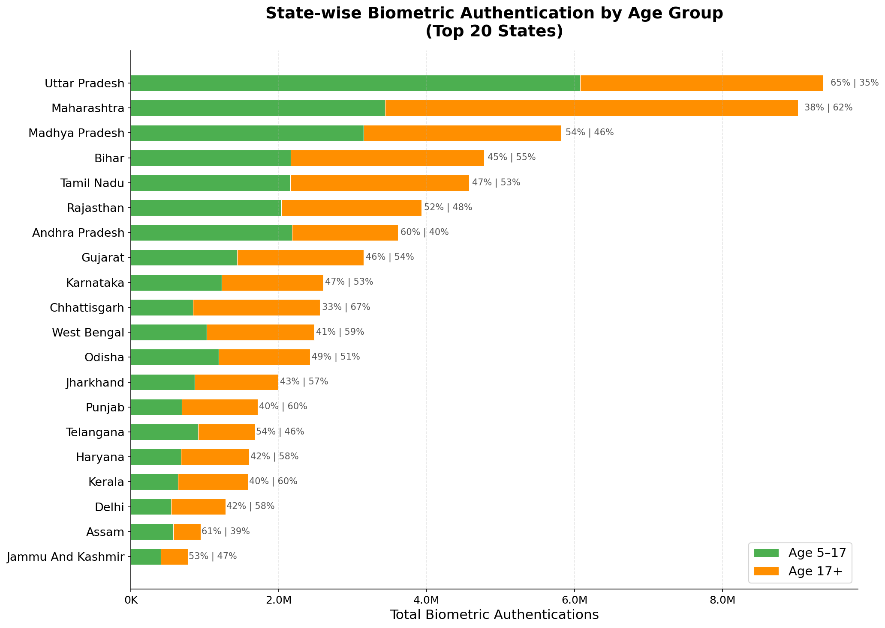
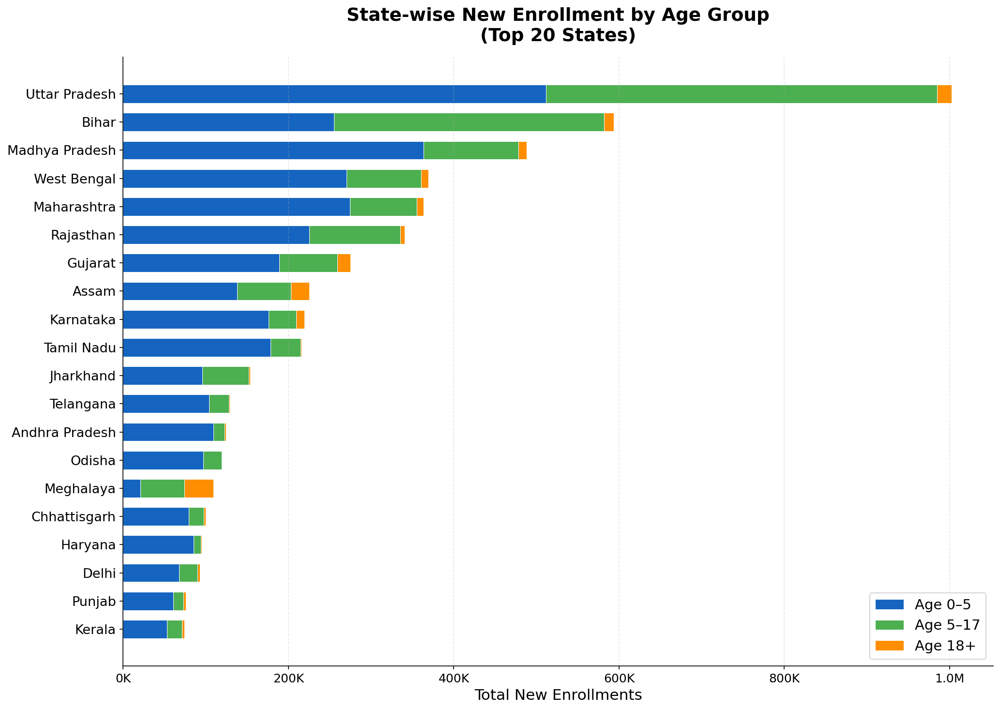
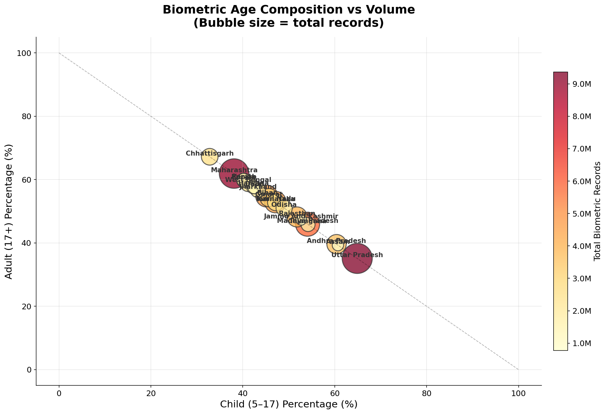
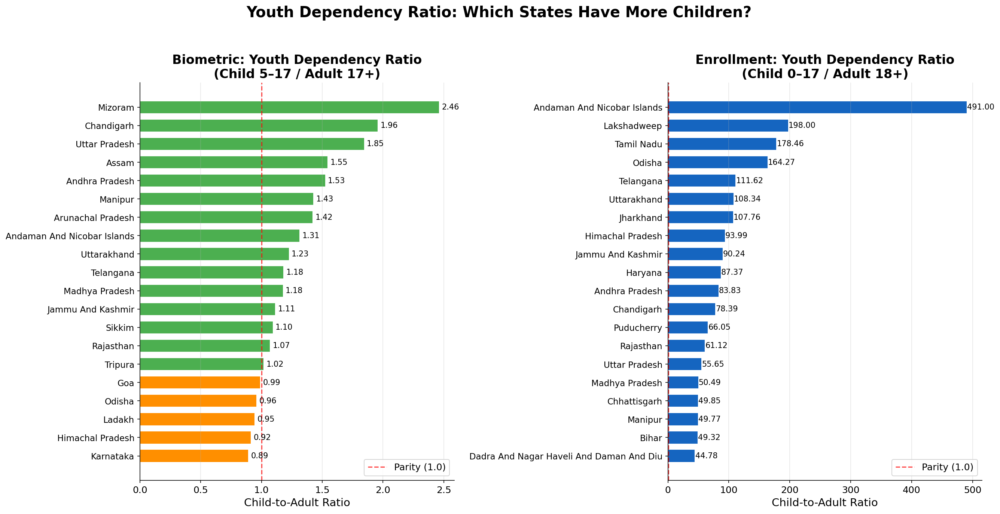

Uncovering Temporal, Geographic, Socioeconomic, and Climate Patterns
Across 6.1 Million Records
The UIDAI Data Hackathon 2026 challenges participants to extract meaningful insights from Aadhaar enrollment data spanning biometric updates, demographic updates, and new enrollments across India.
What temporal patterns exist in enrollment data? Are there day-of-week, monthly, or seasonal trends?
How do geographic and regional factors influence enrollment volumes and patterns?
What is the relationship between socioeconomic indicators (HDI, literacy) and enrollment?
Do climate and environmental factors correlate with enrollment patterns?
Can ML models predict enrollment patterns, classify regions, and detect anomalies effectively?
The original UIDAI data contained only 6 core columns — a significant analytical challenge that required creative data engineering.
| Column | Type |
|---|---|
| Date | Date |
| State | Categorical |
| District | Categorical |
| Pincode | Numeric (6-digit) |
| Age 5–17 Count | Integer |
| Age 17+ Count | Integer |
42–56 naming variations consolidated into 36 standardized state/UT names
All 19,707 unique pincodes validated as 6-digit format
Systematic identification and removal of duplicate records across all three datasets
Strategic imputation using median for numerical and mode for categorical features
| API Source | Data Provided |
|---|---|
| Open-Meteo Weather | Temperature, humidity, precipitation |
| Open-Meteo Air Quality | AQI, PM2.5, PM10 |
| Open-Meteo Elevation | Elevation data per pincode |
| Open-Meteo Geocoding | Lat/Long coordinates |
| India Post Pincode | Region, division, office type |
| Census 2011 | Population, demographics |
| NITI Aayog SDG | SDG scores, health index |
| TRAI Telecom | Teledensity, connectivity |
| NFHS-5 | Health & nutrition metrics |
| RBI Banking | Banking outlets per capita |
| North | 9 states |
| South | 7 states |
| East | 4 states |
| West | 4 states |
| Central | 3 states |
| Northeast | 9 states |
| Metric | Biometric | Demographic | Enrollment |
|---|---|---|---|
| Total Count | 68,260,241 | 36,596,266 | 5,334,962 |
| Mean per Record | 38.66 | 22.91 | 5.43 |
| Median | 8.0 | 7.0 | — |
| Maximum | 13,381 | 16,942 | — |
| Records | 1,765,637 | 1,597,311 | 982,524 |
| Region | Records | Share | Mean |
|---|---|---|---|
| Central | 1,913,109 | 25.74% | 68.75 |
| South | 1,534,809 | 20.65% | 21.08 |
| West | 1,341,536 | 18.05% | 50.60 |
| East | 1,317,325 | 17.72% | 36.16 |
| North | 1,086,913 | 14.62% | 42.14 |
| Northeast | 222,142 | 2.99% | 25.23 |
| Metric | Share |
|---|---|
| Top 5 states | 49–53% |
| Top 10 states | 72–77% |
| Bottom 10 states/UTs | <3% |


| Metric | State | Value |
|---|---|---|
| Highest infant share | Himachal Pradesh | 95.1% |
| Highest child share | Bihar | 55.1% |
| Highest adult share | Meghalaya | 32.1% |
| Highest volume | Uttar Pradesh | 1.0M |


| Dataset | r (HDI) | p-value | Significance |
|---|---|---|---|
| Biometric | -0.365 | 0.051 | Marginal |
| Demographic | -0.451 | 0.014 | Significant |
| Enrollment | -0.534 | 0.003 | Highly Significant |
| Kerala | HDI: 0.779 | Low enrollment activity |
| Delhi | HDI: 0.746 | Low enrollment activity |
| Goa | HDI: 0.761 | Low enrollment activity |
| Tamil Nadu | HDI: 0.708 | Moderate activity |
| Bihar | HDI: 0.576 | High enrollment activity |
| Uttar Pradesh | HDI: 0.596 | Highest enrollment |
| Madhya Pradesh | HDI: 0.606 | High enrollment activity |
| Jharkhand | HDI: 0.599 | High enrollment activity |
| Dataset | F-value | p-value |
|---|---|---|
| Biometric | 1,629.94 | <0.001 |
| Demographic | 610.48 | <0.001 |
| Enrollment | 109.08 | <0.001 |
| Variable Pair | r-value | Strength | Direction |
|---|---|---|---|
| AQI ↔ PM2.5 | 0.949 | Very Strong | ▲ Positive |
| Hospitals ↔ Schools | 0.986 | Very Strong | ▲ Positive |
| SDG Score ↔ Health Index | 0.976 | Very Strong | ▲ Positive |
| Temperature ↔ Schools | 0.740 | Strong | ▲ Positive |
| Temperature ↔ Elevation | −0.640 | Strong | ▼ Negative |
| AQI ↔ SDG Score | −0.582 | Strong | ▼ Negative |
| # | Null Hypothesis (H₀) | Test | Statistic | p-value | Decision |
|---|---|---|---|---|---|
| 1 | H₀: There is no significant difference in enrollment volumes across the 6 geographic regions | Kruskal-Wallis | H = 8,432.1 | <0.001 | ✓ Reject |
| 2 | H₀: Weekend and weekday enrollment distributions are identical | Mann-Whitney U | U = 4.2×10⁹ | <0.001 | ✓ Reject |
| 3 | H₀: Mean enrollment does not differ across HDI categories (Low, Medium, High) | One-way ANOVA | F = 15.73 | <0.001 | ✓ Reject |
| 4 | H₀: Enrollment data follows a normal (Gaussian) distribution | D’Agostino-Pearson | stat = 1.8×10⁵ | <0.001 | ✓ Reject |
| 5 | H₀: Mean enrollment does not differ across rainfall zones | One-way ANOVA | F = 202.93 | <0.001 | ✓ Reject |
| Model | Accuracy | F1 | CV Score |
|---|---|---|---|
| Decision Tree | 99.97% | 1.00 | 0.9998±0.0002 |
| Gradient Boosting | 99.97% | 1.00 | — |
| XGBoost | 99.97% | 1.00 | — |
| Bagging | 99.97% | 1.00 | — |
| Random Forest | 99.87% | 1.00 | — |
| Model | R² | RMSE |
|---|---|---|
| Linear Regression | 1.0000 | ≈0 |
| Huber Regressor | 1.0000 | ≈0 |
| Random Forest | 0.9999996 | Minimal |
| Decision Tree | 0.9999998 | Minimal |
| Method | Config | Silhouette | CH Index |
|---|---|---|---|
| K-Means | k=5 | 0.283 | 9,502 |
| K-Means | k=3 | 0.301 | 8,117 |
| GMM | n=5 | 0.256 | 7,893 |
Z-score normalized enrollment data — models predict enrollment demand levels across districts and time periods
| Algorithm | R² | RMSE | MAE |
|---|---|---|---|
| 🏆 LightGBM | 0.8734 | 0.356 | 0.271 |
| XGBoost | 0.8612 | 0.373 | 0.285 |
| Gradient Boosting | 0.8589 | 0.376 | 0.289 |
| Random Forest | 0.8467 | 0.392 | 0.301 |
Hill Climbing + BIC scoring reveals directed acyclic graph (DAG) of causal relationships
| Cluster | Districts | Characteristic |
|---|---|---|
| High Demand-Dense | 89 | Urban centers, high population density |
| High Demand-Spread | 156 | Large geographic spread, high volume |
| Moderate | 312 | Average demand and coverage |
| Low-Urban | 234 | Urban but low enrollment demand |
| Low-Sparse | 169 | Remote areas, limited accessibility |
Districts with highest composite need scores — priority for new enrollment center placement
Significant day-of-week variation (H=18,448, p<0.001). Tuesday peak for biometric/enrollment. Weekend/weekday reversal between update types.
Gini coefficients 0.654–0.707. Top 10 states account for 72–77% of enrollment. Northeast at only 2.99%.
Inverse HDI-enrollment correlation: r=−0.365 to −0.534. Successful penetration in low-HDI regions — a policy success story.
Negative correlations: r=−0.338 to −0.448. Aadhaar is effectively targeting less-literate populations, ensuring inclusivity.
Moderate rainfall zones = 65–70% enrollment. Agricultural belts dominate. Climate-adaptive scheduling recommended.
99.97% accuracy with ensemble classification. 117 models across 4 paradigms. Pincode features dominate importance.
Increase Northeast’s share from 3%→7% with mobile enrollment camps, especially in Arunachal Pradesh, Manipur, and Mizoram. Target remote and tribal areas.
Expand weekend operations for biometric/demographic updates — 71% higher efficiency. Working population prefers weekend visits for personal updates.
Maintain enrollment momentum in Bihar, UP, and MP. The HDI paradox confirms these drives are working — don’t reduce investment.
Schedule enrollment drives post-monsoon (Oct–Dec) in high-rainfall areas for better rural accessibility and higher turnout.
Leverage pincode zone analysis for precision targeting. Use ML models to identify underserved pincodes and allocate resources accordingly.
Special attention for Andaman & Nicobar, Lakshadweep, and small UTs. Currently near-zero enrollment share requires dedicated mobile units.